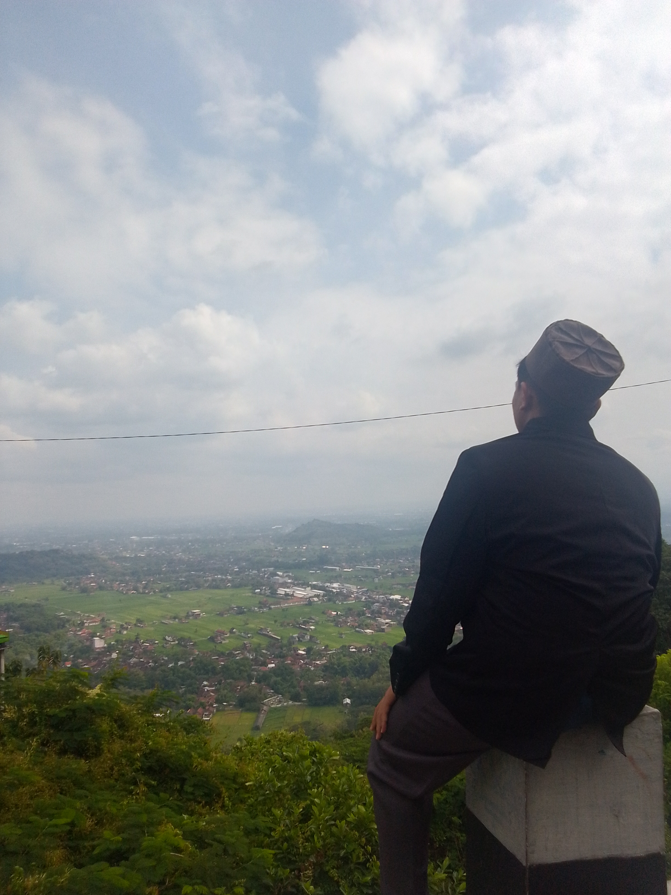

The visionary leader who will become the head of the madrasah, Singer, Al-hafizd
And lover knowledge & filosofi

about me?
Latar belakang
Saya adalah anak dari seorang pekerja wirausaha, yang bekerja sebagai pencetak undangan, pembuat spanduk, stempel, dan editor kecil-kecilan.
Saya adalah anak pertama dari 3 bersaudara, yang masih bersekolah di pondok pesantren
Kenapa Developer?
Yang membuat saya tertarik untuk menjadi web developer adalah keinginan saya yang mau belajar mendalami sifat-sifat moderen yang telah beredar dan tidak bisa kita hindari lagi kecuali satu cara yaitu pelajari
Dalam kata lain "saya tidak mau ketinggalan dan akan terus melangkah sampai jauh". Itu adalah ambisi saya
Cita-cita
Cita-cita saya sebagai kepala madrasah yang mengurus menejemen sekolah, seorang yang bisa membanggakan orang tuanya, dan menjadi donatur yang akan membantu masyarakat yang kurang mampu menjadi seseorang yang memiliki SDM tinggi serta kaya Kepala sekolah, Donatur, & Web developer
Projek pertama
Pembuatan Web Shop Online
Web ini dibuat saat aku menjalani pelajaran hari kedua dipondok IT.
Ini adalah pencapaian yang luar biasa, karna dalam proses saya masih dini saat itu saya bisa membuat hingga 12 file html
Projek kedua
Pembuatan halaman promo produk
Aku memulai sedikit fokus dengan apa yang aku pelajari saat itu jadi biar hasilnya sempurna aku menambahkan sedikit css didalam untuk sedikit memperindah bagian button-nya
Projek ketiga
Pembuatan halaman bertema music populer
Aku mulai bar-bar dengan cera menyatukan html dan css internal, yang padahal css belum dipelajari.
Saat itu aku tidak sabaran ingin langsung mempelajari css, karna itu bisa membuatku puas dengan hasil yang aku buat.
Riwayat belajar
Awal saya datang ke pondok IT saya adalah salah satu anak yang terlalu awal menjalani program di pondok IT
Ketika itu saya ingin masuk karna saya tidak mau nganggur terlalu lama dirumah, jadi saya putusin untuk awal masuk di pondok IT ini.
Saat itu saya masih polos, tidak mengetahui apa yang harus di lakukan dan apa yang tidak harus dilakukan.
setelah 2 hari saya di pondok it, saya memutuskan untuk meminta diri saya untuk di kelas yang bisa menampung saya selama 1 bulan untuk menunggu teman angkatan saya datang
Saat teman angkatan saya masuk, saya mendapatkan kelas, teman, dan mentor yang menemani saya berjalan mempelajari "apa itu developer"
sampai saat ini (saat membuat web ini) saya merasakan selama ini jerih payah saya dan pengorbanan orang tua saya dalam mencerdaskan anaknya, supaya kelak nanti anaknya bisa melebihinya dalam mengatasi masalah kehidupan
"Dalam jerih payah pasti ada buah yang dihasilkan
Akan tetapi tidak sekarang"
"Semua orang punya potensi
Akan tetapi tidak semua orang punya disiplin dan percaya diri"
Bagaimana cara menghubungi kami?
Tekan tombol dibawah